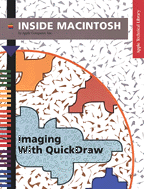

Imaging With QuickDraw

Inside Macintosh: Imaging With QuickDraw describes how your application can use QuickDraw to create and display Macintosh graphics. Available on every Macintosh computer, QuickDraw is the part of the Macintosh Toolbox that performs graphic operations on the user's screen. The Printing Manager, which is also described in this book, allows your application to print the images created with QuickDraw. In particular, this book explains how toTo learn about QuickDraw's text-handling capabilities, read Inside Macintosh: Text. Read Inside Macintosh: Advanced Color Imaging for more information about enhancing your application's color capabilities.
- create graphic images in black and white, grayscale, and color
- optimize your application to draw on various screens
- prepare graphic images offscreen to speed up onscreen drawing
- store graphic images that can be shared by other applications
- manage the cursor for selections made with the mouse
- print on any variety of Macintosh printer
See the Inside Macintosh: QuickDraw GX suite of books for information about QuickDraw GX, Apple Computer's object-based graphics architecture.
See 3D Graphics Programming with QuickDraw 3D for information about Apple Computer's graphics library for creating and rendering three-dimensional objects.
Availability: Click below to obtain Inside Macintosh: Imaging With QuickDraw in any of the following formats.
Book Contents
- Figures, Tables, and Listings
- Preface - About This Book
- Chapter 1 - Introduction to QuickDraw
- Chapter 2 - Basic QuickDraw
- Chapter 3 - QuickDraw Drawing
- Chapter 4 - Color QuickDraw
- Chapter 5 - Graphics Devices
- Chapter 6 - Offscreen Graphics Worlds
- Chapter 7 - Pictures
- Chapter 8 - Cursor Utilities
- Chapter 9 - Printing Manager
- Appendix A - Picture Opcodes
- Appendix B - Using Picture Comments for Printing
- Glossary